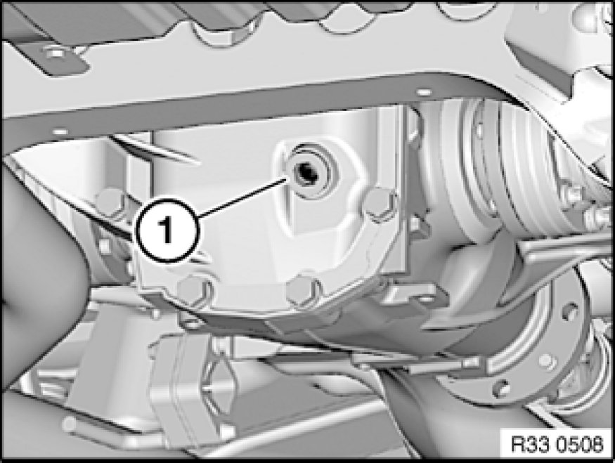

00 11 259 Oil Change In Rear Differential Incl. Used Oil Disposal
00 11 259 - Oil change in rear differential incl. used oil disposal

Warning!
Danger of poisoning 00 .. ... Danger of Poisoning If Oil Is Ingested/Absorbed Through the Skin if oil is ingested/absorbed through the skin!
Risk of injury 00 .. ... Risk of Injury If Oil Comes Into Contact With Eyes and Skin if oil comes into contact with eyes and skin!

Important!
Risk of damage!
To avoid serious damage to the rear differential, it is essential to use only approved transmission oils in the rear differential.
Note:
The oil does not need to be changed in rear differentials carrying the "Life-Time-Oil" sticker.
Only change oil when rear differential is at normal operating temperature.

Recycling:
Observe country-specific waste-disposal regulations

Open plug (1).
Drain and dispose of differential oil.
Add differential oil up to lower edge of opening for screw plug (1); if necessary, refer to Technical Data for necessary fill quantity.
Replace screw plug (1).
Tightening torque 33 11 2AZ 33 11 Rear Differential Case with Cover.